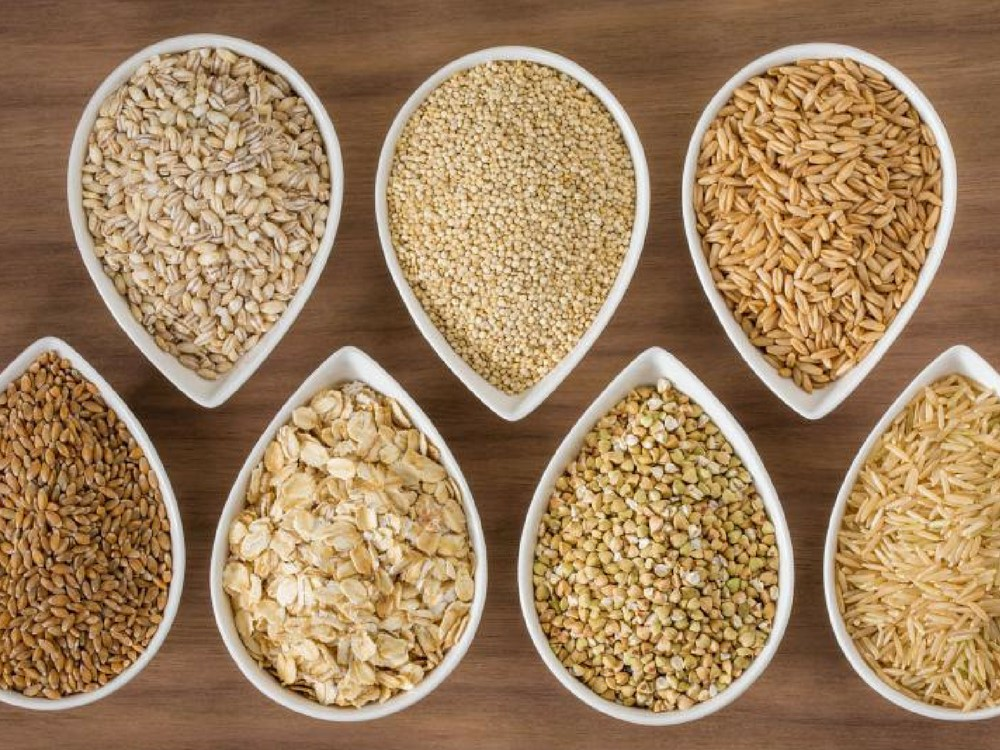
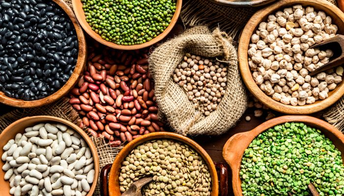
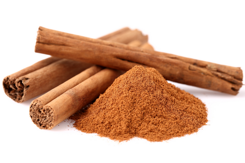
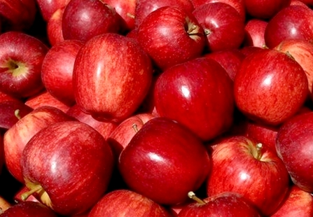
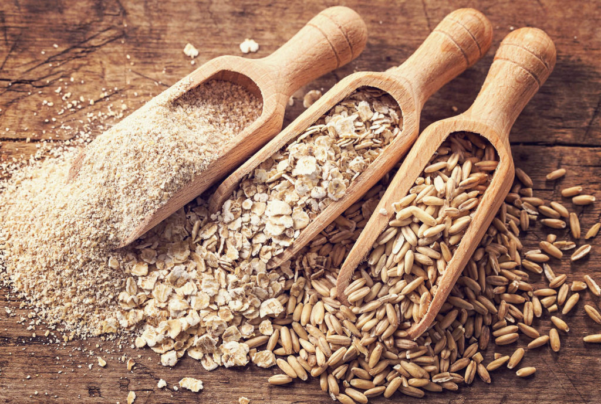

Novo
Quanto mais, melhor! Invista na maior variedade possível desses vegetais. um prato bem colorido é sinônimo de riqueza de nutrientres, como fibras,vitaminas,minerais e antioxidantes.
36 Comentários
Lean Lucas

Novo
Grãos Integrais
Grãos integrais como: Quinoa, chia, linhaça (linhaça dourada /
linhaça marrom) e outros grãos são aliados da saúde. Eles colaboram para o controle das taxas glicêmicas e suas fibras promovem maior saciedade, o que é importante para a manutenção do peso.
48 comententários
by Equipe
Batata Doce
Aliado de quem pratica atividades físicas,esse tubérculo possui um baixo índice glicêmico. Isso quer dizer que seus carboidratos são absorvidos lentamente pelo organismo, o que ajuda no controle da doença.
Clique para saber mais
09 de março de 2022
24 comments
by Equipe

Leguminosas
Alimentos como o feijão, a lentilha e o grãos-de-bico também não podem faltar na dieta. Eles também ajudam a evitar as oscilações nos níveis de glicose no sangue, além de serem fontes de fibras solúveis, antioxidantes, vitaminas e proteínas. O feijão preto ainda colabora para a redução do colesterol e dos triglicérides
Clique e saiba mais
09 de Março de 2022
72 comments
By Equipe

CANELA
Essa especiaria aumenta a sensibilidade à insulina e é importante no combate ao colesterol ruim (LDL). Por ter ação termogênica, a canela ainda é bem-vinda na dieta de quem precisa perder peso.
#999 Line #CCC Next #0CC Prev #F0F0F0
Clique e saiba mais
03 de Março 2022
84 comments
By Equipe

Maçã
A fruta concentra na casca uma fibra chamada pectina, importante para o controle da glicemia e para reduzir o mau colesterol. A maçã ainda tem baixo índice glicêmico.
Clique e saiba mais
03 de Março 2022
96 comments
By Equipe

Aveia
A aveia é rica em uma fibra solúvel chamada beta-glucana, que aumenta a sensibilidade à insulina e evita os picos de açúcar no sangue.
Clique e saiba mais
03 de Março 2022
94 comments
By Equipe